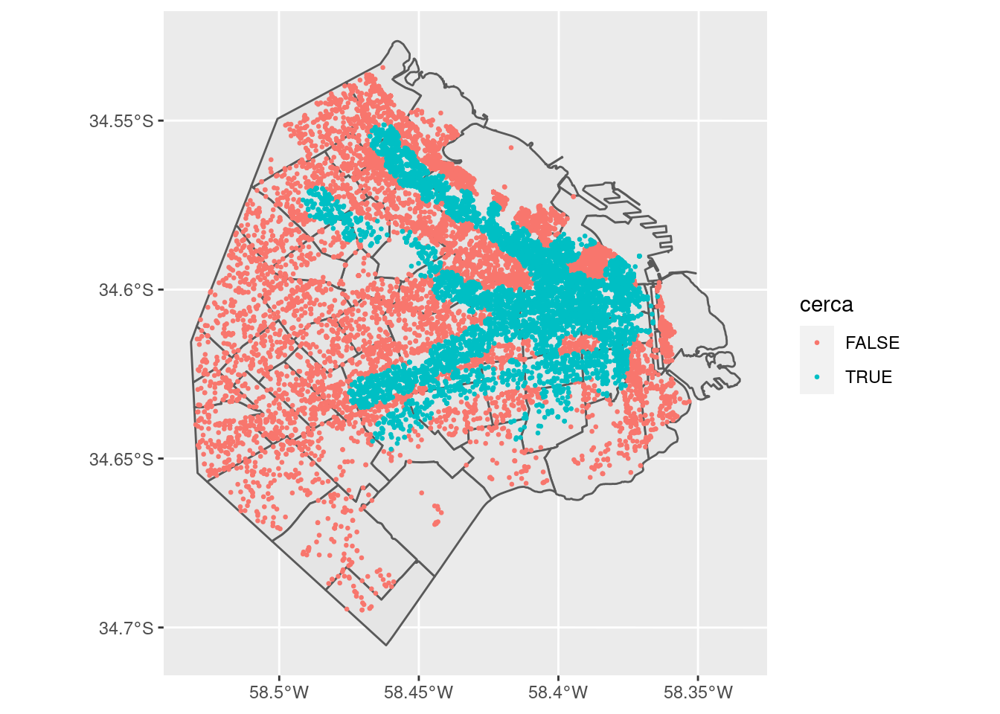

4 Datos espaciales en R
Al terminar este capítulo ustedes van a poder:
- Comprender por qué los datos espaciales son distintos al resto de los datos
- Las dificultades de la representación de esos datos y los estándares utilizados
- Trabajar con datos espaciales en R: su importación, manipulación e introducción a los gráficos
- Identificar los principales tipos de archivos donde suelen compartirse estos datos4.1 ¿Qué es un dato espacial?
Un dato espacial o georreferenciado tiene una característica que lo hace único: posee información sobre su ubicación en la Tierra. No es el único tipo de dato que tiene particularidades, por ejemplo las series de tiempo tienen información sobre un específico período de tiempo donde se registró la información. Esto trae importantes consideraciones al momento de realizar el análisis estadístico, lo que generó el desarrollo de toda una rama de la estadística. No obstante, los datos espaciales no presentan un desafío solo al momento de su análisis, sino que presentan específicidades en la forma de representar su información geográfica y realizar transformaciones en los datos.
4.2 ¿Dónde estamos en la Tierra?
La respuesta a esta pregunta puede ser un poco más compleja de lo que uno piensa, al menos si desea realizar un análisis con esta información. La respuesta más fácil en este momento sería decir: Av. Figueroa Alcorta 7350, Ciudad de Buenos Aires, Argentina. Bien, es un primer paso. Ahora: ¿Cómo calculamos la distancia con respecto a Abbey Road 2, Londres, Inglaterra, donde se encuentra el famoso cruce peatonal de la tapa del disco de los Beatles, Abbey Road? Imposible saberlo solo con esa información.
Si nosotros introdujeramos esos datos en un GPS (o Google Maps), lo que haría es traducir las direcciones que les pasamos a un sistema de grillas que divide al globo en celdas en base a líneas imaginarias en sentido paralelo a los polos (paralelos) y perpendicular a ellos (meridianos). Nuestra dirección quedaría transformada directamente en un vector con dos posiciones: latitud y longitud. Ahora “Av. Figueroa Alcorta 7350, Ciudad de Buenos Aires, Argentina” se convirtió en (-34.714656,-58.785999) y “Abbey Road 2, Londres, Inglaterra” en (51.532068, -0.177305). Las latitudes y longitudes se expresan en grados, así que ya podemos establecer una diferencia cuantitativa entre nuestras dos posiciones ¡Incluso podemos expresarlo en una medida de distancia como metros o kilómetros!
Para esta clase vamos a necesitar varios paquetes, así que los cargamos. Recordemos que si no están instalados hay que usar la función install.packages()
library(tidyverse)
library(sf) # Paquete clave para manipular datos espaciales
library(tmap) # Uno de los paquetes para hacer mapasUna vez que los cargamos, vamos a crear nuestro dataframe con datos espaciales en base a las coordenadas latitud y longitud que definimos anteriormente:
# Creamos un Data Frame con los datos necesarios
datos <- data.frame(lat = c(-34.714656, 51.532068), long = c(-58.785999,
-0.177305), ubicacion = c("UTDT", "Abbey Road"))
# Lo convertimos a un objeto sf
puntosEspaciales <- st_as_sf(datos, coords = c("long", "lat"),
crs = 4326)
st_distance(puntosEspaciales) # En metros## Units: [m]
## [,1] [,2]
## [1,] 0 11131513
## [2,] 11131513 0st_distance(puntosEspaciales)/1000 # En kilómetros## Units: [m]
## [,1] [,2]
## [1,] 0.00 11131.51
## [2,] 11131.51 0.00Según estos cálculos, nos separan aproximadamente 11.131 kms de Abbey Road. Perfecto, pudimos definir nuestra ubicación en la tierra e incluso medir la distancia con otro punto. Hay un parámetro que todavía no introdujimos y que resulta clave cuando lidiamos con datos espaciales: CRS, las siglas de Coordinate Reference System. En la próxima sección vamos a explicar qué son y para que sirven.
4.3 Coordinate Reference Systems
4.3.1 Elipsoides, sistemas de coordenadas y datums
Representar una ubicación en la superficie de la tierra implica superar diversos obstáculos. Para empezar, la tierra no es una esfera: tiene una forma que suele modelarse como geoide, pero incluso eso es una aproximación. La tierra tiene una forma particular, con diversos accidentes geográficos que la hacen única (y difícil de manipular matemáticamente). Sin embargo, nosotros - y a fines prácticos, todas las personas que trabajan con datos georreferenciados - trabajamos en su versión como geoide, y es en relación a esta modelización de la tierra que se montan los CRS.
Definido el geoide, ese modelo de la forma de la tierra, introducimos el primer componente de los CRS: el elipsoide. El elipsoide es una aproximación al geoide con mejores propiedades matemáticas. Para definir un elipsoide necesitamos un par de parámetros que definen su forma. Una vez que contamos con un elipsoide podemos establecer un sistema de grillas tridimensional, como el de latitud y longitud, lo segmenta según los ángulos que se forman entre la línea imaginaria paralela a los polos (paralelos) y la línea imaginaria perpendicular a los polos (meridiano) en un determinado punto, en relación al paralelo y meridiano de origen.
Pero ¿cómo relacionamos al elipsoide con el geoide? Si bien el primero es una aproximación del segundo, para establecer un CRS necesitamos saber como se relacionan entre ellos: tenemos que “fijar” el elipsoide al geoide. Esto es lo que hace el datum: define el origen y la orientación de los ejes de coordenadas. Piensen en el datum como la información necesaria para “dibujar” el sistema de coordenadas en el elipsoide
Entonces ya tenemos tres elementos que poseen los CRS:
- Un elipsoide (un modelo de la tierra, en rigor de un geoide)
- Un sistema de coordenadas, que nos permite determinar la posición de un punto en relación a otro en base a líneas imaginarias
- Un datum, que nos permite dibujar ese sistema de coordenadas en el elipsoide de tal manera que represente al ubicaciones específicas en el geoide
Si no quedó del todo claro no se preocupen: es un tema complejo que, en la mayoría de los casos, solo basta con saber que estos conceptos existen y qué significan. El objetivo de esta subsección es dar la definición básica de cada elemento porque probablemente se encuentren con esta información en diversos lugares, pero a fines prácticos suele utilizarse siempre el mismo elipsoide, datum y sistema de coordenadas, o variaciones que no tienen grandes efectos a los fines prácticos de nuestros trabajos. El World Geodetic System (WGS84) es un standard en la industria a nivel mundial, y existen algunas variaciones locales (la más famosa, el North American Datum (NAD83)) que no nos traerán mayores problemas al momento de las transformaciones. Piensen en el CRS como las unidades de peso o de distancia: cada observación que veamos de datos espaciales corresponde a un determinado CRS y no corresponde hacer operaciones entre dos observaciones pertenecientes a distintos CRS.
4.3.2 Proyecciones
Hasta ahora hemos trabajado en la representación de la Tierra en tres dimensiones. Sin embargo, todos los mapas con los que hemos trabajado desde chicos tienen dos dimensiones ¿Cómo transformamos un objeto de tres dimensiones a uno de dos dimensiones? Debemos realizar proyecciones de ese objeto tridimensional que, como veremos en breve, involucra diversos tradeoffs3. Piensen en la proyección como una tarea de traducción: algo se pierde en el proceso.
La proyección hoy en día más famosa es MERCATOR, la proyección que usa, entre otros servicios, Google Maps. Diseñada hace ya varios siglos para la navegación marítima, esta transformación es relativamente buena en lo relativo preservar formas y útil para navegar.
En lo que realmente falla este tipo de proyección es en definir el tamaño de las unidades geógraficas: los países que están cerca de los polos aparentan tener un tamaño mucho más grande del que realmente tienen, mientras que lo inverso sucede con los que están cerca de la línea del ecuador. Tal es así que existe una página web (https://thetruesize.com/) que permite experimentar de manera interactiva con los tamaños de los países en diversas partes de la proyección. En la Figura 1 muestro un ejemplo: Groenlandia, Islandia, Noruega, Suecia, Finlandia y Reino Unido combinadas ocupan aproximadamente el 50% de Brasil (Figura 1).

Figure 4.1: La proyección MERCATOR distorsiona nuestra percepción de los tamaños
La oferta de proyecciones es prácticamente ilimitada. El paquete mapproj en R nos permite transformar el mundo en base a diversas proyecciones, incluyendo algunas que preservan el tamaño de los países. La Figura 2 muestra el mundo desde otra perspectiva: los países del norte son más chicos de lo que parecen en la proyección mercator.

Figure 4.2: La proyección MOLLWEIDE mantiene la representación de los tamaños
Las proyecciones también forman parte de los CRS, que pueden o no tener una proyección. Sea como sea, lo importante de esta sección es haberlos convencido de que importa conocer en que CRS están expresados los datos espaciales. Las transformaciones entre CRS no hace falta conocerlas, sino que el paquete sf lo hará por nosotros. Insisto: lo importante es saber que los datos espaciales SIEMPRE tienen un CRS, aun si no está definido explícitamente en nuestro archivo. Volvamos al ejemplo de los inmuebles de las propiedades de la introducción de este libro para ver un qué formato de archivos tienen los datos espaciales y un ejemplo sobre transformación de CRS.
4.4 Un ejemplo: datos públicos de GCBA y Properati
4.4.1 CABA
El Gobierno de la Ciudad de Buenos Aires (GCBA) brinda acceso a muchos recursos digitales muy interesantes en su repositorio https://data.buenosaires.gob.ar. De hecho, allí están disponibles los shapefiles donde se encuentran los polígonos que definen a los barrios y a las comunas que utilizamos en las anteriores clases. Todavía hay una parte que no había introducido sobre las etapas de preprocesamiento de los datos: ¿cómo trajimos los dos datasets y conseguimos agrupar a los inmuebles por barrio?
El primer paso es descargar los datos (haciendo click aquí)[http://cdn.buenosaires.gob.ar/datosabiertos/datasets/barrios/barrios-zip.zip] Deberían descargar un .zip que deberían extraer en la misma carpeta donde esta su proyecto de R.
Ahora deberían tener cinco archivos nuevos, con los nombres barrios_badata y siete terminaciones diferentes. Esta es la presentación de los shapefiles, un tipo de archivo creado para almacenar datos espaciales, diseñado por la empresa ESRI. En rigor, trabajar con shapefiles tiene ciertos problemas, uno de ellos es el formato multiarchivo que tiene. En este caso, el shapefile se encuentra compuesto por cinco archivos, pero pueden ser más y nunca menos que tres. Sea como sea, este tipo de formato se encuentra ampliamente difundido y mejor amigarnos con el.
Veamos cómo leer estos datos espaciales en R. Para esto, vamos a usar la función st_read del paquete sf.
## Reading layer `barrios_badata' from data source `D:\OneDrive\Documents\UTDT\Cursos\CienciaDeDatosParaCuriosos\Figuras\Capitulo 4 - Datos Espaciales\barrios_badata' using driver `ESRI Shapefile'
## Simple feature collection with 48 features and 5 fields
## geometry type: POLYGON
## dimension: XY
## bbox: xmin: 93743.42 ymin: 91566.42 xmax: 111751.4 ymax: 111401.7
## proj4string: +proj=tmerc +lat_0=-34.6297166 +lon_0=-58.4627 +k=0.9999980000000001 +x_0=100000 +y_0=100000 +ellps=intl +units=m +no_defs## Coordinate Reference System:
## No user input
## wkt:
## PROJCS["Argentina_GKBsAs",
## GEOGCS["GCS_Campo_Inchauspe",
## DATUM["Campo_Inchauspe",
## SPHEROID["International_1924",6378388.0,297.0]],
## PRIMEM["Greenwich",0.0],
## UNIT["Degree",0.0174532925199433]],
## PROJECTION["Transverse_Mercator"],
## PARAMETER["False_Easting",100000.0],
## PARAMETER["False_Northing",100000.0],
## PARAMETER["Central_Meridian",-58.4627],
## PARAMETER["Scale_Factor",0.999998],
## PARAMETER["Latitude_Of_Origin",-34.6297166],
## UNIT["Meter",1.0]]barrios <- st_read("barrios_badata")
st_crs(barrios)La función st_crs() nos devuelve información sobre el sistema de referencia de coordenadas que tiene nuestro objeto. Todos los datos espaciales tienen algún tipo de sistema de referencia de coordenadas, solo que a veces no contamos información sobre cuál es.
Uno de los formatos que existen para almacenar información sobre el CRS de los datos se conoce como proj4string, que lo podemos ver en la última linea de lo que nos devolvió la función st_crs(). Se trata de un conjunto de parámetros que definen a un CRS, siempre antecedidos por un +. Por ejemplo, podemos ver que los datos tienen una proyeccion MERCATOR (+proj=tmerc), con latitud de origen -34.6297166 y longitud de origen -58.4627. La unidad de la proyección está en metros (quiere decir que al movernos en el eje cartesiano xy que genera la proyección cada unidad es un metro).
En el caso de los shapefiles, la información sobre el CRS pueden consultarla en el archivo .prj, uno de los cinco que conforman al shapefile en este caso.
4.4.2 Properati
Dejemos por un momento el dataset del GCBA y enfoquémonos en los datos sobre precios de las propiedades que conseguimos desde Properati. Debido a que el dataset que les presenté la primera vez contaba con aproximadamente 500.000 observaciones, y eso va a llevarnos mucho tiempo de procesamiento en la clase, vamos a trabajar sólo con una muestra de las observaciones iniciales. Para esto, vamos a descargar directamente las propiedades listadas durante los últimos seis meses desde febrero de 2018. Para esto, tienen que ejecutar el siguiente código:
datosPrecios <- read.csv("https://github.com/datalab-UTDT/GIS2/raw/master/DatosAdicionales/datosPrecios.csv")Deberían tener un objeto que se llame datosPrecios con las variables lat-lon, lat, lon y price_usd_per_m2
Ahora que tenemos nuestro dataset de precios, vamos a ver que, aunque tiene información sobre la latitud y longitud, R no lo reconoce como un dataset de datos espaciales. Para eso tenemos que convertirlo a un objeto sf. Pero antes de hacer esto, vamos a lidiar con los datos faltantes. Los datos faltantes son la norma en la mayoría de los datasets, y pueden generarnos más de un problema, especialmente si la razón por la que no aparecen en nuestros datos no es aleatoria. Sea como sea, en R los datos faltantes se registran como NA (Not Available) y es importante saber como identificarlos. Para eso, debemos utilizar la función is.na() que nos devuelve TRUE cuando el elemento del vector es NA y FALSE caso contrario.
precioNA <- is.na(datosPrecios$price_usd_per_m2)
str(precioNA)## logi [1:106854] FALSE TRUE TRUE FALSE FALSE FALSE ...Como vemos, la función devuelve un vector lógico con valores FALSE y TRUE, correspondiente a cuando hay datos disponibles en price_usd_per_m2 o el dato está faltante, respectivamente. Podemos sumar la cantidad de datos faltantes mediante la función sum()
sum(precioNA)## [1] 37058sum(precioNA)/nrow(datosPrecios) * 100 # Calculamos como proporción de los datos totales## [1] 34.68097Aproximadamente un tercio del dataset no tiene datos sobre la variable que necesitamos. Vamos a eliminar estos datos ya que no nos sirven para nuestro análisis y nos ocupa espacio en la memoria de nuestra computadora:
datosPrecios <- datosPrecios %>% filter(!is.na(price_usd_per_m2))¿Hay datos faltantes en otras variables de nuestro dataset? Podemos usar la función anyNA, que nos devuelve TRUE o FALSE dependiendo si algún elemento de un vector es un dato faltante o no.
anyNA(datosPrecios$price_usd_per_m2) # Devuelve FALSE, tal como esperábamos.## [1] FALSEanyNA(datosPrecios$lat.lon) # Pero todavía tenemos datos faltantes en esta variable:## [1] TRUElatlonNA <- is.na(datosPrecios$lat.lon)
sum(latlonNA)## [1] 7725sum(latlonNA)/nrow(datosPrecios) * 100 # Calculamos como proporción de los datos totales## [1] 11.06797datosPrecios <- datosPrecios %>% filter(!is.na(datosPrecios$lat -
lon))
anyNA(datosPrecios) # No tenemos ningun dato faltante en nuestro dataset## [1] FALSEBien, nuestro dataset posee finalmente 62.071 observaciones que podemos usar, aproximadamente un 58% de las observaciones originales. Si bien no tenemos datos sobre el CRS al que se asocian las coordenadas lat-lon del dataset que acabamos de procesar, lo cierto es que uno asume que corresponde al EPSG 4326, es decir al CRS que utiliza el elipsoide WSG84 y no se encuentra proyectado en dos dimensiones. EPSG no es otra cosa que un listado de códigos con CRS clasificados, lo que hace más simple consultar a qué CRS corresponde un determinado número (mucho más simple que la defición de proj4string). Como sf realiza bien su trabajo, nos deja crear un objeto sf con los datos que tiene nuestro data frame, y cuando consultamos la información sobre el CRS nos devuelve tanto su código EPSG como su definición proj4string. Pero antes de convertirlo, vamos a asegurarnos de que las variables lat y lon sean númericas.
datosPrecios$lat <- as.numeric(datosPrecios$lat)
datosPrecios$lon <- as.numeric(datosPrecios$lon)
datosPrecios <- st_as_sf(datosPrecios, coords = c("lon", "lat"),
crs = 4326)
st_crs(datosPrecios)## Coordinate Reference System:
## User input: EPSG:4326
## wkt:
## GEOGCS["WGS 84",
## DATUM["WGS_1984",
## SPHEROID["WGS 84",6378137,298.257223563,
## AUTHORITY["EPSG","7030"]],
## AUTHORITY["EPSG","6326"]],
## PRIMEM["Greenwich",0,
## AUTHORITY["EPSG","8901"]],
## UNIT["degree",0.0174532925199433,
## AUTHORITY["EPSG","9122"]],
## AUTHORITY["EPSG","4326"]]4.4.3 Asignando los inmuebles a los barrios
Tenemos dos datasets espaciales: barrios, donde tenemos polygonos con los límites de cada barrio, y datosPrecios, donde tenemos puntos de los inmuebles. Para eso, debemos usar nuestra primera operación espacial: la función st_join, que nos devuelve un nuevo objeto sf con los atributos que corresponden a la intersección espacial entre los puntos y los polígonos. Piensen en esta función como el join que vimos la clase pasada.
datosPreciosBarrios <- st_join(datosPrecios, barrios)## Error in st_geos_binop("intersects", x, y, sparse = sparse, prepared = prepared): st_crs(x) == st_crs(y) is not TRUETenemos un error! ¿Qué significa st_crs(x) == st_crs(y) is not TRUE? Nos dice algo muy importante: estamos intentando hacer una operación espacial con datos que están en distinta unidad, es decir en CRS distintos. Veamoslo:
st_crs(datosPrecios)## Coordinate Reference System:
## User input: EPSG:4326
## wkt:
## GEOGCS["WGS 84",
## DATUM["WGS_1984",
## SPHEROID["WGS 84",6378137,298.257223563,
## AUTHORITY["EPSG","7030"]],
## AUTHORITY["EPSG","6326"]],
## PRIMEM["Greenwich",0,
## AUTHORITY["EPSG","8901"]],
## UNIT["degree",0.0174532925199433,
## AUTHORITY["EPSG","9122"]],
## AUTHORITY["EPSG","4326"]]st_crs(barrios)## Coordinate Reference System:
## No user input
## wkt:
## PROJCS["Argentina_GKBsAs",
## GEOGCS["GCS_Campo_Inchauspe",
## DATUM["Campo_Inchauspe",
## SPHEROID["International_1924",6378388.0,297.0]],
## PRIMEM["Greenwich",0.0],
## UNIT["Degree",0.0174532925199433]],
## PROJECTION["Transverse_Mercator"],
## PARAMETER["False_Easting",100000.0],
## PARAMETER["False_Northing",100000.0],
## PARAMETER["Central_Meridian",-58.4627],
## PARAMETER["Scale_Factor",0.999998],
## PARAMETER["Latitude_Of_Origin",-34.6297166],
## UNIT["Meter",1.0]]Efectivamente, los proj4string de ambos datos espaciales no coinciden. Por suerte, sf no nos va a dejar hacer operaciones espaciales como la de st_join si los CRS de ambos objetos no coinciden. Además, sf nos permite realizar la transformación de una forma muy simple con st_transform
datosPrecios <- datosPrecios %>% st_transform(st_crs(barrios))
datosPreciosBarrios <- st_join(x = datosPrecios, y = barrios)
colnames(datosPreciosBarrios)## [1] "lat.lon" "price_usd_per_m2" "BARRIO" "COMUNA" "PERIMETRO"
## [6] "AREA" "OBJETO" "geometry"Ya tenemos los datos de los barrios para cada uno de los anuncios de los inmuebles con los que estamos trabajando, solo usando la información sobre su ubicación en el espacio ¿A cuántos inmuebles pudo ubicar dentro de los barrios de la Ciudad de Buenos Aires?
sum(!is.na(datosPreciosBarrios$BARRIO))## [1] 1861018.610 observaciones de los datos totales (30%) corresponden a barrios de la CABA, según nuestra operacion espacial. Veamos si todo funcionó de acuerdo a lo que queríamos, para eso vamos a inspeccionar los puntos que fueron asignados algún barrio y los que no.
Lo que hace un spatial join es agregar las columnas del segundo data frame al primero (entre otras en nuestro ejemplo aquella que contiene la información sobre los barrios). Lo que vamos a hacer es simplemente crear una variable que diga TRUE si hay algún dato en esa variable, es decir que el matcheo fue exitoso, y FALSE cuando no lo fue, usando la funcion ifelse(). Esta función se fija si algo se cumple (en este caso, si la variable BARRIO tiene un valor NA), y devuelve algo si se cumple y otra cosa si no se cumple:
datosPreciosBarrios <- datosPreciosBarrios %>% mutate(CABA = ifelse(is.na(BARRIO),
TRUE, FALSE))
# Chequeo para ver si lo hicimos bien
table(datosPreciosBarrios$CABA)##
## FALSE TRUE
## 18610 43461Listo, ahora ya podemos hacer nuestros gráficos usando tmaps o ggplot. Recuerden usar library() o require() para poder trabajar con sus funciones. Además, vamos a usar RColorBrewer, una libreria para usar diferentes paletas de colores. Todo esto está explicado en el capítulo 3 de este libro.
library(tmap)
library(ggplot2)
library(RColorBrewer)# Gráfico usando tmaps
tm_shape(barrios) + tm_polygons(col = "white", border.col = "black") +
tm_shape(datosPreciosBarrios) + tm_dots(col = "CABA", palette = brewer.pal(n = 2,
name = "Set1"))# Gráfico usando ggplot
ggplot() + geom_sf(data = barrios, fill = NA) + geom_sf(data = datosPreciosBarrios,
mapping = aes(color = CABA), size = 0.1, show.legend = FALSE) +
coord_sf(xlim = c(90000, 110000), ylim = c(92000, 113000),
datum = NA) + scale_color_brewer(palette = "Set1") +
theme_minimal()Todo parece haber funcionado bien. Con el dataset datosPreciosBarrios (e incorporando datos sobre otros años) podemos ejecutar los códigos que vimos en la clase pasada y lograr al dataset que analizamos durante nuestra primera clase: ya están en condiciones de descargar datos espaciales de distintas fuentes y combinarlos !
4.5 Otras operaciones espaciales
st_join() o st_union() son solo algunas de las operaciones espaciales que podemos realizar sobre nuestros datos. Lo que hace es identificar aquellos datos espaciales que tocan a otros (en nuestro caso particular, puntos y polígonos), sin importar la forma en que lo hacen. Por ejemplo, el punto podría coincidir con el limite de un polígono, o podría estar dentro de él: st_join nos devuelve cualquiera de estos dos casos. Veamos todas las operaciones espaciales mediante el didáctico ejemplo del libro de Geocomputation with R
# creamos un polígono que en realidad es un triángulo (la
# primera y la cuarta coordenada coinciden)
a = st_sfc(st_polygon(list(rbind(c(-1, -1), c(1, -1), c(1, 1),
c(-1, -1)))))
# Creamos una línea
l = st_sfc(st_linestring(x = matrix(c(-1, -1, -0.5, 1), ncol = 2)))
# Creamos puntos
p = st_cast(st_sfc(st_multipoint(x = matrix(c(0.5, 1, -1, 0,
0, 1, 0.5, 1), ncol = 2))), "POINT")
ggplot() + geom_sf(data = a) + geom_sf(data = l) + geom_sf(data = p) +
theme_minimal() + annotate("text", x = c(0.5, 1, -1, 0) +
0.05, y = c(0, 1, 0.5, 1), label = c(1:4))¿Cuáles puntos de nuestro objeto p se intersectan con nuestro polígono a? En el gráfico se ve fácilmente: los puntos 1 y 2. También sabemos cómo hacerlo en base a nuestro ejemplo anterior.
st_intersects(p, a)## Sparse geometry binary predicate list of length 4, where the predicate was `intersects'
## 1: 1
## 2: 1
## 3: (empty)
## 4: (empty)# Si usamos SPARSE = FALSE nos devuelve algo mucho más
# amigable
st_intersects(p, a, sparse = FALSE)## [,1]
## [1,] TRUE
## [2,] TRUE
## [3,] FALSE
## [4,] FALSESupongamos ahora que queremos encontrar aquellos puntos que NO se intersectan con nuestro polígono. La función que deberíamos usar se llama st_disjoint
st_disjoint(p, a, sparse = FALSE)## [,1]
## [1,] FALSE
## [2,] FALSE
## [3,] TRUE
## [4,] TRUERefinemos un poco nuestra búsqueda. Supongamos que queremos encontrar qué objetos espaciales se encuentran dentro de los límites de otro objeto. Pueden ser dos polígonos, un punto y un polígono o una línea y un polígono, por ejemplo. Sigamos con nuestro ejemplo ¿Cuáles puntos se encuentran dentro de nuestro polígono?
st_within(p, a, sparse = FALSE)## [,1]
## [1,] TRUE
## [2,] FALSE
## [3,] FALSE
## [4,] FALSE¿Y cuáles son los puntos de que tocan los límites de otro polígono?
st_touches(p, a, sparse = FALSE)## [,1]
## [1,] FALSE
## [2,] TRUE
## [3,] FALSE
## [4,] FALSE¿Cuáles son los puntos que están a una distancia menor a 0.5 de algún límite del polígono? ¿Y de 1?
st_is_within_distance(p, a, dist = 0.5, sparse = FALSE)## [,1]
## [1,] TRUE
## [2,] TRUE
## [3,] FALSE
## [4,] FALSEst_is_within_distance(p, a, dist = 1, sparse = FALSE)## [,1]
## [1,] TRUE
## [2,] TRUE
## [3,] FALSE
## [4,] TRUE4.6 Incorporando información a nuestro dataset: los subtes
Agreguemos información a nuestros inmuebles a través de la relación espacial que tiene con otros objetos. Esta vez, descarguen dos shapefiles y extraigánlos y copiénlos a nuestro proyecto. Para que funcionen las dos primeras lineas del siguiente código, que cargan los archivos, hay que guardar ambos shapefiles dentro de una carpeta que se llame Subte. Una vez que hayamos hecho eso, este código debería leer ambos shapefiles a nuestra sesión de R:
## Reading layer `estaciones_de_subte' from data source `D:\OneDrive\Documents\UTDT\Cursos\CienciaDeDatosParaCuriosos\Figuras\Capitulo 4 - Datos Espaciales\Subte' using driver `ESRI Shapefile'
## Simple feature collection with 87 features and 3 fields
## geometry type: POINT
## dimension: XY
## bbox: xmin: 97881.68 ymin: 98442.25 xmax: 108564.5 ymax: 108167.8
## proj4string: +proj=tmerc +lat_0=-34.6297166 +lon_0=-58.4627 +k=0.9999980000000001 +x_0=100000 +y_0=100000 +ellps=intl +units=m +no_defs## Reading layer `red_de_subte' from data source `D:\OneDrive\Documents\UTDT\Cursos\CienciaDeDatosParaCuriosos\Figuras\Capitulo 4 - Datos Espaciales\Subte' using driver `ESRI Shapefile'
## Simple feature collection with 81 features and 2 fields
## geometry type: LINESTRING
## dimension: XY
## bbox: xmin: 97881.68 ymin: 98442.25 xmax: 108564.5 ymax: 108167.8
## proj4string: +proj=tmerc +lat_0=-34.6297166 +lon_0=-58.4627 +k=0.9999980000000001 +x_0=100000 +y_0=100000 +ellps=intl +units=m +no_defsestacionesSubte <- st_read(dsn = "Subte", layer = "estaciones_de_subte")
recorridoSubte <- st_read(dsn = "Subte", layer = "red_de_subte")tm_shape(barrios) + tm_polygons(col = "white") + tm_shape(estacionesSubte) +
tm_bubbles(size = 0.2, col = "white") + tm_shape(recorridoSubte) +
tm_lines()Incoporemos a nuestro dataset una información que podría ser relevante: la distancia entre la casa y la estación más cercana de subte. Para esto, será clave la función st_distance. Veamos qué hace
distancias <- st_distance(datosPreciosBarrios, estacionesSubte)
str(distancias)## Units: [m] num [1:62071, 1:87] 5987 39789 44069 43435 39987 ...dim(distancias)## [1] 62071 87La función nos devuelve la distancia en una determinada unidad, en este caso en metros, entre los objetos que le pasamos. En esta ocasión es los anuncios de los inmuebles contra las estaciones de subte, que como podemos ver son 87. Nos interesa la distancia mínima, así que vamos a correr el siguiente código:
datosPreciosBarrios <- datosPreciosBarrios %>% mutate(distanciaSubte = apply(distancias,
1, function(x) min(x)))Vamos a explicar paso por paso lo que hicimos. En primer lugar, aplicamos el verb mutate() que, como ya explicamos en el capítulo 2, crea una variable en nuestro dataset. En nuestro caso, la nueva variable se llama distanciaSubte. Luego aplicamos la función apply. Esta función es muy versátil y útil en R ya que nos permite crear nuestras propias funciones. Lo que hay que pasarle 1) es una matriz (como nuestro objeto distancias), 2) una orientación para aplicar nuestra función, 1 representa filas y 2 columnas, y 3) una función. En nuestro caso, la función es muy simple y lo único que hace es tomar el mínimo. Como escribimos 1, toma el mínimo de cada fila. En español le dijimos: “tomá la matriz distancias, y para cada fila elegí el mínimo y devolvelo”
¿Qué podemos hacer con esta información? Muchas cosas, como por ejemplo ver si el precio de los inmuebles de alguna manera se encuentra afectado por la cercanía al subte. Con todo, vamos a terminar esta sección con un gráfico indicando las lineas de subte y con color diferencial si los inmuebles se encuentran a 500 metros o menos de una estación de subte.
datosPreciosBarrios <- datosPreciosBarrios %>%
filter(!is.na(BARRIO)) %>%
mutate(cerca = ifelse(distanciaSubte<=500,TRUE,FALSE))
ggplot() +
geom_sf(data = barrios) +
geom_sf(data = datosPreciosBarrios, size=0.5, aes(color=cerca)) 4.6.1 Una alternativa más simple: usando otro método de join espacial
Anteriormente en este capítulo vimos cómo podemos establecer relaciones espaciales entre nuestros objetos con st_intersects() st_contains(), st_touches() o st_is_within_distance(). Utilicemos este conocimiento para modificar el st_intersects() que usa por definición st_join() para establecer las relaciones entre los polígonos/puntos de nuestros datos espaciales.
# Eleminamos las columnas que creeamos antes
datosPreciosBarrios <- datosPreciosBarrios %>%
select(-distanciaSubte,-cerca)
datosPreciosBarrios <- st_join(datosPreciosBarrios,estacionesSubte,
join=st_is_within_distance,
dist=500)La lógica del st_join() es igual a la que usamos anteriormente para agregar los datos de los barrios a los anuncios de los inmuebles. La principal diferencia es que ahora en el parámetro join le decimos que, en lugar de st_intersects() use st_is_within_distance() para tener en cuenta si dos entidades espaciales están relacionados o no. el parámetro dist simplemente define cual es el umbral de distancia para determinar si está o no cerca. Recuerden que los CRS tienen asociados una unidad de medidas, en este caso es metros.
Esperamos el mismo comportamiento que antes: a aquellos inmuebles que se los haya detectado a una distancia menor a 500 metros de alguna estación de subte se le va asignar las columnas correspondientes con el valor a esa estación de subte. Cuando no haya coincidencia con ninguna de las estaciones, esos datos van a a aparecer como NAs
datosPreciosBarrios <- datosPreciosBarrios %>%
mutate(CERCA=ifelse(is.na(ESTACION),FALSE,TRUE))
ggplot() +
geom_sf(data = barrios) +
geom_sf(data = datosPreciosBarrios, size=0.5, aes(color=CERCA)) 
El gráfico es el mismo que en la subsección anterior.
4.7 Ejercicio
Hemos leído datos en formato shapefile, una forma de guardar y compartir datos espaciales ha sido explicado en detalle anteriormente. Adicionalmente, hemos cargado datos desde archivos separados con coma (csv) que tenían latitud y longitud en dos columnas. Otro de los archivos que continenen datos espaciales más difundidos es el geojson, la versión espacial (geo) de los json. Se trata de un conjunto de listas, pero lo importante es que en los últimos años se ha tomado como estandard que el CRS sea el WGS84 (epsg:4326). De esta manera, todo lo que carguemos desde estos archivos estará en ese sistema de coordenadas, muy útil para evitar confusiones. sf permite levantar esta clase de archivos, al igual que el resto que vimos.
Ejecuten el siguiente código para levantar los datos de los precios de los inmuebles para la Ciudad de Buenos Aires y los polígonos de los barrios
avisosCABA <- read_sf("https://github.com/martintinch0/CienciaDeDatosParaCuriosos/raw/master/data/datosPreciosBarrios.geojson")
barrios <- read_sf('https://raw.githubusercontent.com/martintinch0/CienciaDeDatosParaCuriosos/master/data/barriosCABA.geojson')- ¿Cuál es el valor promedio por metro cuadrado de los inmuebles ofertados en la Ciudad de Buenos Aires?
- ¿Cuál es el valor promedio por metro cuadrado de los inmuebles ofertados en la Ciudad de Buenos Aires en cada uno de sus barrios?
- Hacer un mapa con el valor promedio del metro cuadrado por barrio de la Ciudad de Buenos Aires.
Este video resume en unos pocos minutos gran parte de lo que vamos a ver acá y es recomendable↩